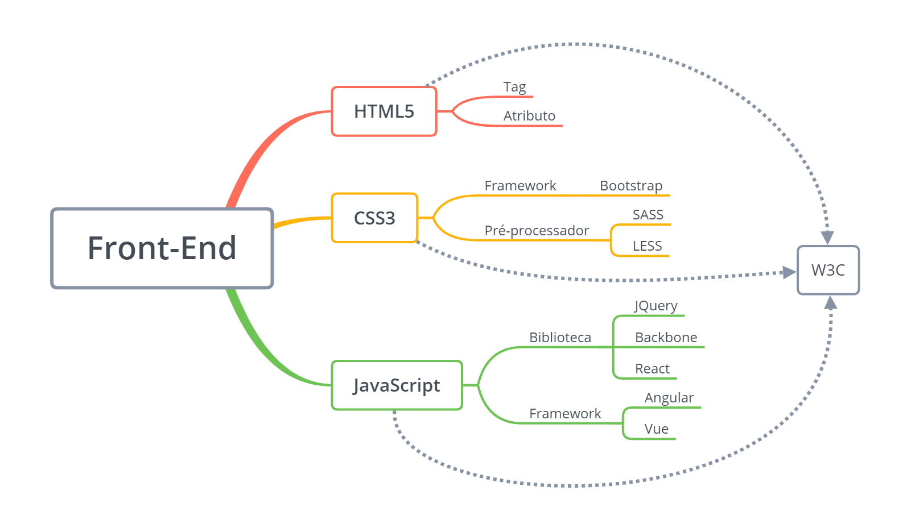

Por onde começar?
06 novembro 2021

Inicie seus estudo como mostra o mapa ao lado, pelo HTML, CSS e javaScript, pois eles são a base para o desenvolvimento de um site bem estruturado e também de facil manutenção, sugiro que compre um curso, e inicie os estudos, estudar com um cronograma é melhor que estudar sem, com um curso você segue as orientações do professor que certamente seguira uma lógica de aprendizagem. Tenho uma dica de site muito bom para compra de curso em TI, voçê já deve ter vistou ou ouvido falar daUdemyna voçê pode encontra varios e varios curso de progamação tanto para iniciantes como niveis maiores, e ainda sair com certificado para validar em tua faculdade, os preços também são bem acessíveis, geralmente de 19,90 a cima, um bom lugar para quer aprender e ter um certificado. E não fique ai pensando que para ser um desenvolvedor precisar esta na faculdade, isso não importa no nosso ramo, o que realmente importa é seu conhecimento e portfolio, saber fazer o que a empresa pedi é mais importante do que ter um papel dizendo que voçê sabe fazer, pense nisso, se voçê pesquisar encontrara varios e varios depoimentod e pessoas quye entraram no ramo do desenvolvimento sem esta na faculdade, apenas com cursos feitos e seus esforços, conseguiram, segua esse exemplo também!
Veja este video do canal Escola Front-end, que o próprio Julio(progamador) um pouco de sua tragetoria de vida na profissão, também é um otimo canal para aprendizagem!!